ABOUT ME
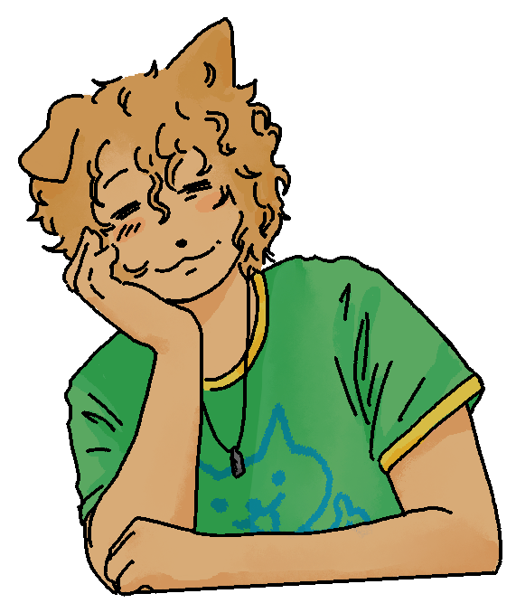
Hi! Click me!
Introduction
Hello! I'm smallcarnivorousmammal (aka smallcarnivore or cat). I've been an avid artist since I could comprehend it. I mostly do digital and physical art, and I like the internet. Sometimes I do creative writing, practice my research skills, and make some really good food. I love cats as you could probably tell by my name, and they've been my special interest for pretty much my entire life. I go by he/him pronouns. Thanks for visiting my website!
Fun Facts
Click the button ↓
Interests
- I really enjoy researching and reading about various subjects like deep sea life, hydrothermal vents, radiological disasters, and felinology.
- I have two main long-term worldbuilding/writing projects. One is a sci-fi world and the other is a more character-focused world.
- I'm also attempting to make my way into the world of RPG game development. Recently, I've been making a lot of progress.
- Cat behavior and genetics is my passion, but I'm still a complete amateur.
- I enjoy cooking, baking, and going on walks.
Contact
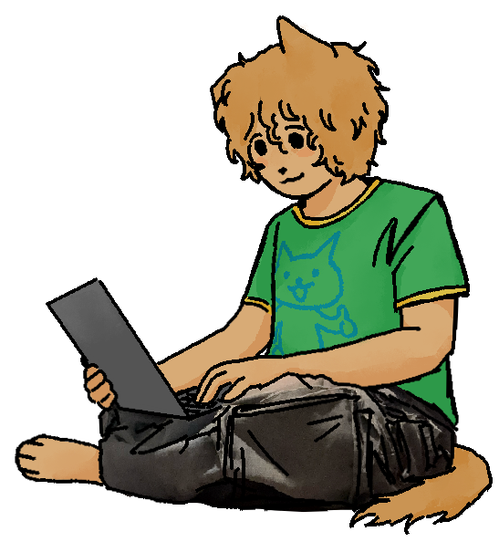
I usually reply quickly.
You can reach me directly via email at smallcarnivorousmammal@gmail.com. I'm usually pretty quick to respond if I'm not too busy. Feel free to reach out!
My Blinkies
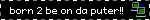

 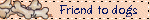
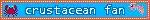
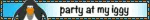
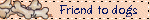
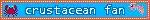
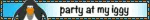
 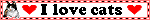
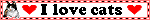

 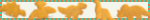
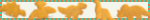


 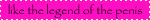
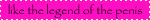


 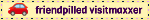
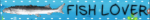
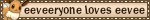
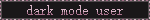
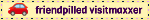
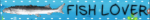
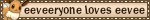
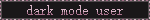


 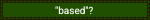
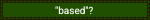
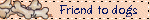
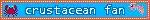
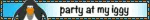
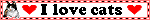
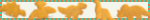
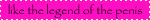
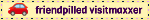
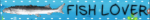
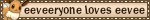
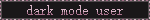
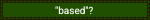
My Stamps
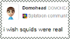
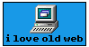
 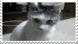
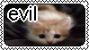
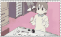
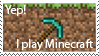
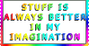
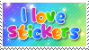
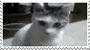
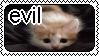
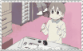
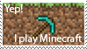
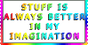
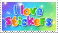


 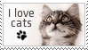
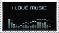
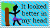
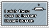
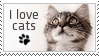
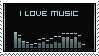
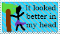
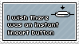


 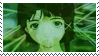
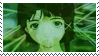
 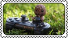
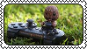

 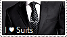
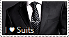


 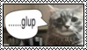
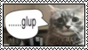

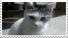
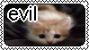
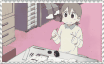
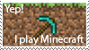
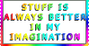
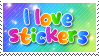
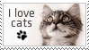
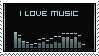
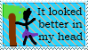
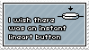
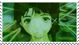
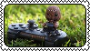
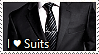
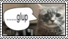